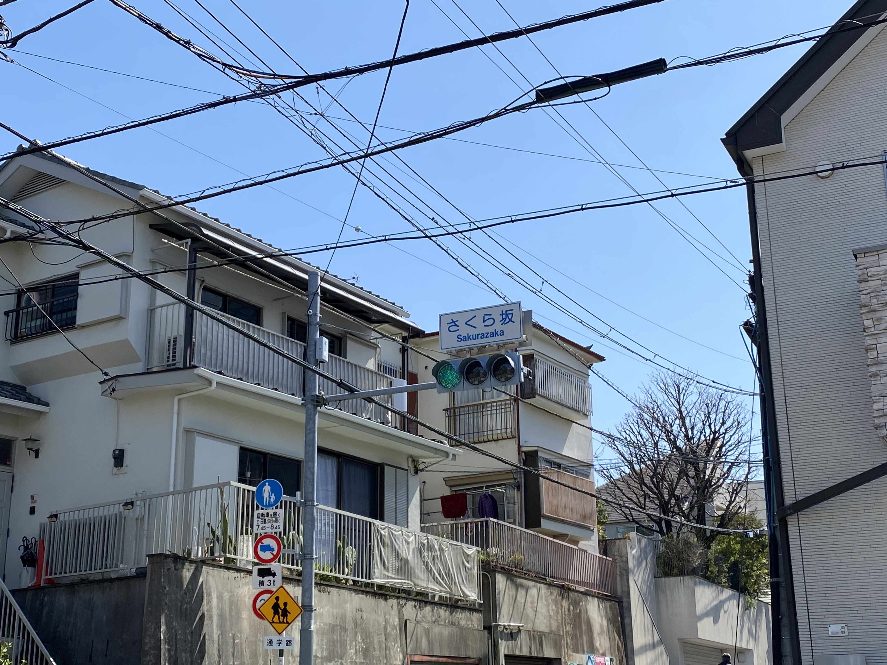
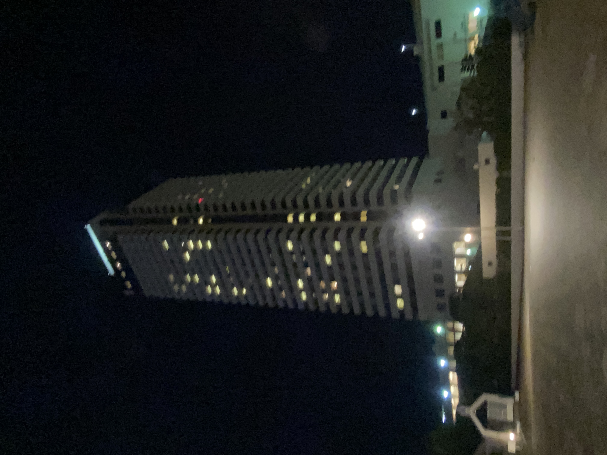
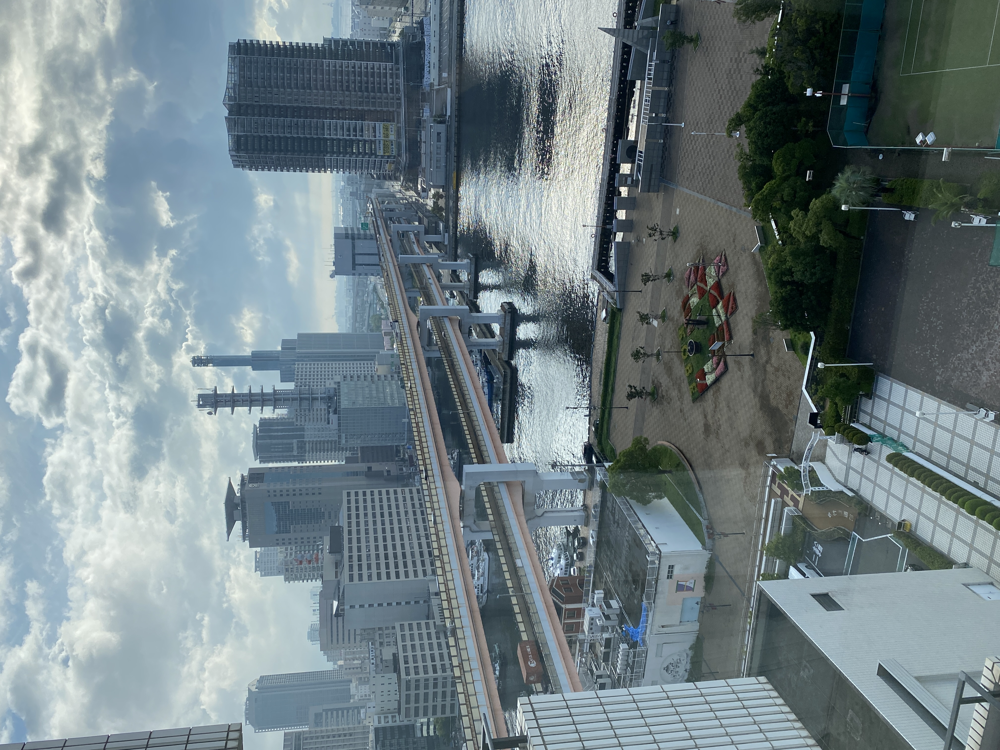
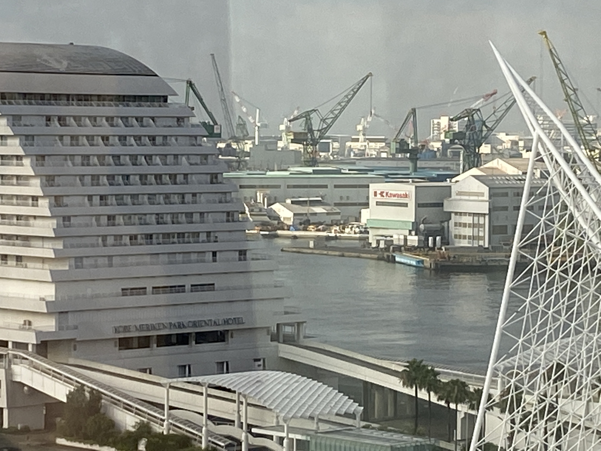

写真
このページでは当サイト管理人が撮影した写真を掲載します．
2022
2022/3
大学院卒業式当日に撮影した写真です．桜がとても奇麗でした．

田園調布にて撮影．桜と竹が並んでいて，風情を感じました(上)．その下には川が流れていたのですが，カメと鯉がいました．カメに関しては微動だにしない．．．(下)

|  |  |
 |
 |
田園調布さくら坂桜橋から桜を撮影しました．橋からの景色は圧巻でした．今のスマホの待ち受け画面に設定してあります． やはり，高級住宅街なだけあって，田園調布はいい場所ですね．．．閑静で，住みやすそうだと感じました．
大学で撮影しました．もう立ち寄ることもないのかと考えると．．．短い間でしたが，大変お世話になりました．
2022/7
会社が連休でしたので，神戸の中央区にあるメリケンパークに行きました．ホテルも借りて一泊二日の旅行(？)でした．1日目はこの世の終わりのような大雨で， ずぶ濡れとなり，何もする気が起きず，ただただ周辺を散歩してました．2日目は晴れてくれて，いろんな場所を巡ることができました． 神戸は西の方へ行くと田舎となんら景色が変わりませんが，やはり中央区あたりになると，栄えていますね．
例のあれです(上）．映えスポットとかいう場所に行ってみました．Instagramをやっていない自分とは無縁な撮影対象物ですが，便乗して撮りました． 特に面白いものではありません．そんなことより，後ろの船かっこいい！！
 |
 |
宿泊したホテルです(上）．ホテルオークラという有名なホテルです．左写真がエントランスです．宿泊先をオリエンタルホテル（下右写真のドーム型の建設物）とオークラとで迷いましたが，階層が高い方が景色いいだろという 単純な理由でオークラを選定しました．ホテルからポートタワーが見えるということで少し楽しみにしていたのですが，当時ポートタワーは改装中で， 工事用ネットで覆いつくされていました（爆）． 宿泊した部屋は中間くらいの階でそこから撮った写真がこちらです（下）．「Kawasaki」もしっかり捉えておきました(右)．
|  |  |
手前に見えるのが神戸海洋博物館(+カワサキワールド)．奥に見えるのが工事中のネットにプロジェクションマッピングされたポートタワー． 神戸海洋博物館と隣接しているカワサキワールドも翌日に見に行きました．撮影もOKでしたので写真もたくさん撮りました．
神戸海洋博物館にて撮影（上）．1833年に進水した，イギリスの海軍戦艦「ロドニー」の模型です．スケールが大きく（実寸大の1/8)，とても迫力が ありました．18世紀後半から始まった産業革命により 重工業が発展し，1860年には帆船から，蒸気機関のスクリュー推進に改造されました． 1868年にはロドニーは神戸港開港を祝して神戸港に来航し,礼砲を放っています．
カワサキワールドにて撮影（上）．航空母艦「瑞鶴」の模型です．1938年5月25日に川崎造船所にて起工され翌年1939年11月27日に進水，1941年9月25日に 竣工しました． 瑞鶴は真珠湾攻撃を始め，多くの作戦に参加し，奮闘しました．マリアナ沖海戦まで被弾しなかった幸運艦として知られています．
同じくカワサキワールドにて撮影（上）川崎重工業は日本国内で初めて産業用ロボットを開発しました．そのロボット実物を間近で見たことのある人は少ないのではないかと 予想しします．上の写真はその国内初産業用ロボット「UNIMATE」です．UNIMATEは1969年に製造開始され，溶接用のロボットとして使用されました． 現代の産業用ロボットは電磁モータを使用しているものがほとんどですが，UNIMATEは油圧駆動です．直動を含む6自由度構成で，実際の動作はYouTubeなどで 検索すれば見ることができます．
柄でもなく神戸博物館にて美術作品を鑑賞しました（上）．博覧会のタイトルは「美の巨匠たち」（下）．中学時代の美術の成績が5段評価中2の私が，感じ取れるものもなく， 1時間ほどで抜け出しました．絵が上手いってすごいですよね（小並感）．